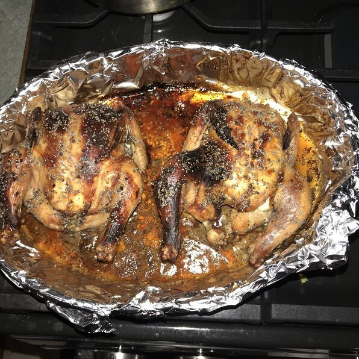
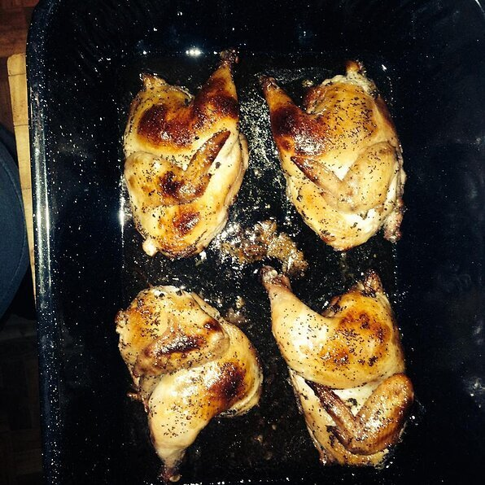

Honey-Poppy Seed Cornish Hens
This is a delicious dish that serves well with curried vegetables.

Ingredents
- 2 Rock Cornish hens
- Half teaspoon of salt
- Half teaspoon of ground black pepper
- A third cup of honey
- 1 tablespoon poppy seeds
- 1 and half teaspoons of mustard powder
- Three quarter teaspoon of ground ginger
Directions
-
Step 1
Preheat oven to 350 degrees F (175 degrees C). Spray rack of shallow roasting pan with non-stick spray.

-
Step 2
Cut each hen in half; place skin side down in roasting pan. Sprinkle with salt and pepper.
-
Step 3
Whisk together the honey, poppy seeds, mustard and ginger. Brush over both sides of the hens.
-
Step 4
Roast uncovered for 1 hour turning once.

Nutrition facts
Per Serving:
442 calories; protein 29.7g; carbohydrates 24.7g; fat 24.9g; cholesterol 169.7mg; sodium 395mg.
Full Nutrition